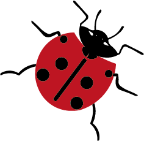
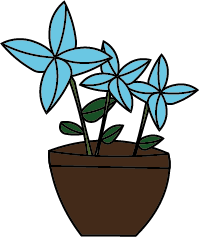

Westerpark
Op deze pagina hebben we het over Westerpark, een groot park in Amsterdam-West. In het Westerpark kan je een groen park en de Westergasfabriek vinden.

Hoe duurzaam is Westerpark?
In het Westerpark zijn regels waar bezoekers zich aan moeten houden. Op het gebied van duurzaamheid gelden daar dezelfde regels als in andere parken.
- Je mag in het park barbecueën, maar alleen op de speciale barbecueplekken.
- Honden mogen maar in een deel van het park loslopen.
- Je bent verplicht om vuilnis en de uitwerpselen van je hond op te ruimen. Er zijn een aantal plekken in het park waar automaten staan met zakjes
- De eenden mogen niet gevoerd worden. Het brood maakt ze ziek en niet opgegeten en dat trekt ratten aan.
- Je mag niet overnachten in het park.
- Het water naast de spartelvijver is niet geschikt om in te spelen.
Wat is er te doen in Westerpark?
Het Westerpark is de ideale plek waar je op je vrije dag heen kunt en je tijd te vullen. Je kunt gaan korfballen of tenissen, zwemmen in de spartelvijver of uitrusten op het gras.
Ook kun je naar de Westergasfabriek, die zich in het park bevindt. In de Westergasfabriek bestaat uit meerdere gebouwen en er vinden vaak evenementen plaats. Er zijn bijvoorbeeld galeries, bioscoop, café's en restaurants in de Westergasfabriek.
Mijn mening over het park
Ik vind het Westerpark een erg leuk park, ik ben er graag voor de evenementen die daar plaats vinden. Ook vind ik de buurt waar het park zich bevindt, Haarlemmerbuurt erg leuk om te komen.
Waar bevindt het park zich?
Het park ligt aan de rand van het centrum in de Haarlemmerbuurt. Je kunt vanaf Amsterdam Centraal met bussen 21 richting Geuzeveld en uitstappen bij Van Hallstraat of bus 22 richting Amsterdam Sloterdijk en uitstappen bij Nassauplein. Lopen kan ook, dat duurt een halfuurtje hier een link naar de route.